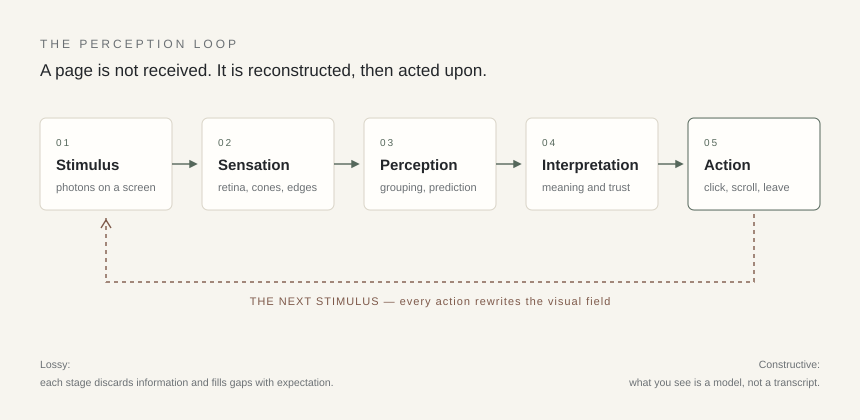

Chapter 01第一章
The Internet as a Visual System互联网作为一个视觉系统
Every webpage is an experiment on the human visual system, run millions of times a day without a consent form. This chapter frames the screen as a stimulus environment—and asks what kind of system is on the receiving end. 每一个网页，都是一场针对人类视觉系统的实验，每天在未经同意的情况下运行数百万次。本章把屏幕视为一种刺激环境，并追问：接收端究竟是一个怎样的系统？
The web is not a neutral container for information. It is a designed field of light that triggers a biological system evolved for a three-dimensional world. Perception is constructive, selective, and aimed at action. Design is therefore the practice of choosing which construction to invite. 互联网并不是承载信息的中立容器。它是一片被设计过的光场，触发着一套为三维世界演化而来的生物系统。知觉是建构性的、选择性的，并且指向行动。因此，设计就是选择邀请哪一种建构发生。
A page is a stimulus, not a document页面是刺激，不是文档
The word “page” borrows its authority from print. A printed page holds ink; a screen emits or reflects light. That difference is not cosmetic. What reaches you is a pattern of photons, and everything after that pattern is a construction. “页面”这个词借用了印刷品的权威。纸页承载油墨，屏幕则发光或反光。这一差别并非装饰性的。真正抵达你的，是一组光子图案；而这组图案之后的一切，都是建构。
Visual processing runs through a chain: stimulus, sensation, perception, interpretation, action. The retina registers edges and contrasts; the cortex groups them into surfaces and objects; memory and expectation turn those objects into meaning; the hand clicks, scrolls, or leaves. Each stage discards information and fills the gaps with a guess. 视觉处理沿着一条链条展开：刺激、感觉、知觉、解释、行动。视网膜记录边缘与对比，皮层把它们组织成表面与物体，记忆与预期再把这些物体转化为意义，最后手去点击、滚动，或者离开。每一个阶段都会丢弃信息，并用猜测填补空缺。
The practical consequence is that a page is never received whole. It is sampled, predicted, and edited in real time. When we say a layout is “clear,” we usually mean that the guesses it invites are the ones we intended. 由此产生的实际后果是：页面从来不是被完整接收的。它被采样、被预测、被实时编辑。当我们说一个版式“清晰”时，通常的意思是：它邀请的那些猜测，恰好是我们想要的那些。

The bandwidth problem带宽问题
Human vision feels wide and immediate, but the part that can report detail is narrow. The fovea covers roughly two degrees of visual angle—about the size of your thumbnail at arm's length. Beyond it, acuity falls off sharply. Reading is a sequence of quick jumps, not a smooth scan. 人的视野感觉宽广而即时，但真正能报告细节的部分却很窄。中央凹大约只覆盖两度视角——相当于手臂伸直时你拇指指甲的宽度。越往外，锐度下降得越快。阅读是一连串快速的跳跃，而不是平滑的扫描。
Herbert Simon's formulation is still the cleanest: “A wealth of information creates a poverty of attention.” Every added element competes with every other element for a limited channel. This is why a page with more information can be less informative than a page with less. 赫伯特·西蒙的表述依然最精炼：“信息的丰富，造成注意的贫乏。”每增加一个元素，它都在与所有其他元素争夺一条有限的通道。这就是为什么信息更多的页面，有时反而不如信息更少的页面有信息量。
Design, on this view, is not decoration added to content. It is the allocation of attention: what to make loud, what to make quiet, what to leave out. 在这个视角下，设计不是给内容添加装饰，而是对注意的分配：什么该响亮，什么该安静，什么该被省略。
Affordances are learned可供性是学来的
James Gibson argued that we perceive affordances—possibilities for action—rather than neutral properties. A surface that supports walking looks walkable; a handle looks graspable. Perception is already practical. 詹姆斯·吉布森主张，我们知觉到的是“可供性”——行动的可能性——而不是中性的属性。能支撑行走的表面看起来就可走，把手看起来就可握。知觉从一开始就是实用的。
Screens have affordances too, but most of them are conventions rather than physics. A blue underline affords clicking because generations of browsers taught us so. A hamburger icon affords a menu because an industry standard taught us so. None of this is innate. A user who has never seen a website does not see a “button”; they see a rectangle. 屏幕也有可供性，但其中大多数是约定，而非物理属性。蓝色下划线可供点击，是因为一代代浏览器教会了我们。汉堡图标可供打开菜单，是因为行业标准教会了我们。这些都不是天生的。一个从未见过网站的人看到的不是“按钮”，而是一个矩形。
This is why “intuitive” is a suspicious word. It usually means “familiar to the person judging.” The useful question is not “Is this intuitive?” but “What has this person learned to expect?” 这就是“直观”这个词值得警惕的原因。它通常只意味着“对评判者本人来说很熟悉”。真正有用的问题不是“这直观吗”，而是“这个人已经学会了期待什么”。
An ecology, not a laboratory是生态，不是实验室
Laboratory studies of perception usually present isolated stimuli for brief, controlled trials. The web is the opposite: self-paced, interactive, social, and full of interruptions. People arrive with a goal, a history, three other tabs, and a phone that vibrates. 实验室里的知觉研究通常呈现孤立的刺激，进行短暂而受控的试次。互联网恰恰相反：自定节奏、可交互、社会化，而且充满打断。人们带着一个目标、一段历史、另外三个标签页，以及一部会震动的手机来到这里。
The unit of analysis is therefore the loop, not the image. A user looks, forms a guess, acts, and the page changes. The next look is shaped by what happened last time. This is closer to Gibson's ecology than to a psychophysics lab. 因此，分析的单位是回路，而不是图像。用户看一眼，形成一个猜测，采取行动，页面随之改变。下一次看，又被上一次发生的事所塑造。这更接近吉布森所说的生态，而不是心理物理实验室。
It also means that context is not noise to be averaged away. It is part of the stimulus. 这也意味着，情境不是可以被平均掉的噪声。情境本身就是刺激的一部分。
Change blindness shows that looking is not the same as seeing. In a well-known experiment, Simons and Chabris (1999) asked participants to count basketball passes; roughly half failed to notice a person in a gorilla suit walking through the scene. On the web, the same selective machinery produces banner blindness: users learn to skip regions that look like advertising, including useful links inside them (Benway & Lane, 1998). The failure is not optical. It is a filter doing its job. 变化盲视表明，看并不等于看见。在一项著名实验中，西蒙斯与查布里斯（1999）让参与者数篮球传球次数，约有一半人没有注意到一个穿着大猩猩服装的人从场景中走过。在网页上，同样的选择机制制造了横幅盲视：用户学会跳过看起来像广告的区域，连同其中有用的链接一起跳过（Benway & Lane, 1998）。这不是眼睛的失败，而是过滤器在正常工作。
What behavioral science can and cannot tell you行为科学能告诉你什么，不能告诉你什么
Behavioral science is useful here in three ways. It can diagnose: why did people miss the button that was clearly there? It can predict: what will likely happen if we add a badge, a countdown, or a second call to action? And it can critique: is this design helping someone act on their own goal, or exploiting a shortcut for someone else's? 行为科学在这里有三种用处。它能诊断：为什么人们会错过一个明明就在那里的按钮？它能预测：如果我们加上一个角标、一个倒计时，或第二个行动按钮，可能会发生什么？它还能批判：这个设计是在帮助人们实现自己的目标，还是在利用心理捷径服务于他人的目标？
It cannot, by itself, tell you what to ship. Effects are often small, samples are often narrow, and laboratory tasks are cleaner than a checkout page at eleven at night. Use the research to generate hypotheses, then test them with the people who will actually use the thing. 但它本身不能告诉你该上线什么。效应往往很小，样本往往狭窄，实验室任务也比晚上十一点的结账页面干净得多。用研究来生成假设，再用真正会使用它的人来检验假设。
Open a page you use every day. List five things it makes visually loud and five things it hides or delays. Next to each, write the behavior the choice encourages—click, scroll past, trust, leave. You have just performed a rough affordance audit. 打开一个你每天使用的页面。列出五件它让视觉上“响亮”的东西，以及五件它隐藏或延迟呈现的东西。在每一项旁边，写下这个选择所鼓励的行为——点击、滑过、信任、离开。你已经完成了一次粗略的可供性审计。
- A screen is a stimulus environment, not a neutral container.屏幕是一种刺激环境，而不是中立的容器。
- Perception is constructed, selective, and oriented toward action.知觉是建构的、选择性的，并且指向行动。
- Attention is scarce; design is the allocation of it.注意是稀缺的；设计就是对它的分配。
- “Intuitive” usually means “learned,” which makes user research indispensable.“直观”通常意味着“已学会”，这正是用户研究不可替代的原因。
- Gibson, J. J. (1979). The Ecological Approach to Visual Perception. Houghton Mifflin.
- Marr, D. (1982). Vision: A Computational Investigation into the Human Representation and Processing of Visual Information. W. H. Freeman.
- Simon, H. A. (1971). Designing organizations for an information-rich world. In Computers, Communications, and the Public Interest.
- Simons, D. J., & Chabris, C. F. (1999). Gorillas in our midst: Sustained inattentional blindness for dynamic events. Perception, 28(9), 1059–1074.
- Benway, J. P., & Lane, D. M. (1998). Banner blindness: Web searchers often miss “obvious” links. Internetworking.
- Ware, C. (2019). Information Visualization: Perception for Design (4th ed.). Morgan Kaufmann.